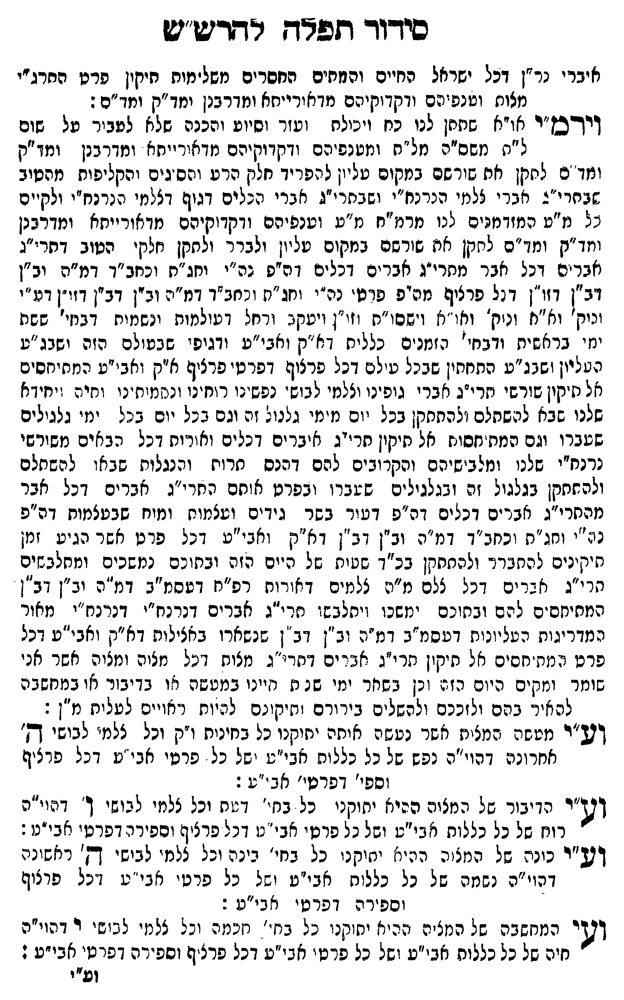

Neue Klartextfassung
אברי נר"ן דכל ישראל החיים והמתים החסרים משלימות תיקון פרט התרי"ג מצות וענפיהם ודקדוקיהם מדאורייתא ומדרבנן ומד"ק ומד"ס: ויהר"מ או"א שתתן לנו כח ויכולת ועזר וסיוע והכנה שלא לעבור על שום ל"ת משס"ה מל"ת ומענפיהם ודקדוקיהם מדאורייתא ומדרבנן ומד"ק ומד"ס לתקן את שורשם במקום עליון להפריד חלק הרע והסיגים והקליפות מהטוב שבתרי"ג אברי צלמי הנרנח"י ושבתרי"ג אברי הכלים דגוף דצלמי הנרנח"י ולקיים כל מ"ע המזדמנים לנו מרמ"ח מ"ע וענפיהם ודקדוקיהם מדאורייתא ומדרבנן ומד"ק ומד"ס לתקן את שורשם במקום עליון ולברר ולתקן חלקי הטוב דתרי"ג אברים דכל אבר מתרי"ג אברים דכלים דס"פ נה"י וחג"ת וכחב"ד דמ"ה וב"ן דב"ן דזו"ן דכל פרצוף מס"פ פרטי נה"י וחג"ת וכחב"ד דמ"ה וב"ן דב"ן דזו"ן דע"י ונוק' וא"א ונוק' ואו"א וישסו"ת וזו"ן ויעקב ורחל דעולמות ונשמות דבחי' ששת ימי בראשית ודבחי' הזמנים כלים דא"ק ואבי"ע ודגופי שבעולם הזה ושבג"ע העליון ושבג"ע התחתון שבכל עולם דכל פרצוף דפרטי פרצוף א"ק ואבי"ע המתיחסים אל תיקון שורשי תרי"ג אברי גופינו וצלמי לבושי נפשינו רוחינו ונשמותינו וחיה ויחידה שלנו שבא להשלם ולהתתקן בכל יום מימי גלגול זה וגם בכל יום בכל ימי גלגולים שעברו וגם המתיחסות אל תיקון תרי"ג איברים דכלים ואורות דכל הבאים משורשי נרנח"י שלנו ומלבישיהם והקרובים להם דהנסתרות והנגלות שבאו להשלם ולהתתקן בגלגול זה ובגלגולים שעברו ובפרט אותם התרי"ג אברים דכל אבר מתרי"ג אברים דכלים דס"פ דעור בשר גידים ועצמות ומוח שבעצמות דס"פ נה"י וחג"ת וכחב"ד דמ"ה וב"ן דב"ן דא"ק ואבי"ע דכל פרט אשר הגיע זמן תיקונים להתברר ולהתתקן בכ"ד שעות של היום הזה ובתוכם נמשכים ומתלבשים תרי"ג אברים דכל צלם מ"ה צלמים דאורות רפ"ח דעסמ"ב דמ"ה וב"ן דב"ן המתיחסים להם ובתוכם ימשכו ויתלבשו תרי"ג אברים דנרנח"י דנרנח"י מאור המדריגות העליונות דעסמ"ב דמ"ה וב"ן דב"ן שנשארו באצילות דא"ק ואבי"ע דכל פרט המתיחסים אל תיקון תרי"ג אברים דתרי"ג מצות דכל מצוה ומצוה אשר אני שומר ומקיים היום הזה וכן בשאר ימי שנות חיינו במעשה או בדבור או במחשבה להאיר בהם ולזככם ולהשלים בירורם ותיקונם להיות ראויים לעלות מ"ן: וע"י מעשה המצות אשר נעשה אותה יתוקנו כל בחינות ו"ק וכל צלמי לבושי ה' אחרונה דהוי"ה נפש של כל כללות אבי"ע ושל כל פרטי אבי"ע דכל פרצוף וספי' דפרטי אבי"ע: וע"י הדיבור של המצוה ההיא יתוקנו כל בחי' דעת וכל צלמי לבושי ו' דהוי"ה רוח של כל כללות אבי"ע ושל כל פרטי אבי"ע דכל פרצוף וספירה דפרטי אבי"ע: וע"י כונה של המצוה ההיא יתוקנו כל בחי' בינה וכל צלמי לבושי ה' ראשונה דהוי"ה נשמה של כל כללות אבי"ע ושל כל פרטי אבי"ע דכל פרצוף וספירה דפרטי אבי"ע: וע"י המחשבה של המצוה ההיא יתוקנו כל בחי' חכמה וכל צלמי לבושי י' דהוי"ה חיה של כל כללות אבי"ע ושל כל פרטי אבי"ע דכל פרצוף וספירה דפרטי אבי"ע:
Original gegen neue OCR · Niqqud für Vergleich ausgeblendet
Original
אבריK107-001 נר"ן דכל ישראל החיים והמתיםK107-002 החסרים משלימות תיקוןK107-003 פרט התרי"ג מצות וענפיהםK107-004 ודקדוקיהם מדאורייתא ומדרבנן ומד"ק ומד"ס: ויהר"מ או"א שתתן לנו כח ויכולת ועזר וסיוע והכנה שלא לעבור על שום ל"ת משס"ה מל"ת ומענפיהםK107-005 ודקדוקיהם מדאורייתא ומדרבנן ומד"ק ומד"ס לתקןK107-006 את שורשם במקום עליון להפריד חלק הרע והסיגים והקליפות מהטוב שבתרי"ג אברי צלמי הנרנח"י ושבתרי"ג אברי הכלים דגוף דצלמי הנרנח"י ולקיים כל מ"ע המזדמנים לנו מרמ"ח מ"ע וענפיהם ודקדוקיהם מדאורייתא ומדרבנן ומד"ק ומד"ס לתקן את שורשם במקום עליון ולברר ולתקןK107-007 חלקי הטוב דתרי"ג אבריםK107-008 דכל אבר מתרי"גK107-009 אברים דכלים דס"פ נה"י וחג"ת וכחב"דK107-010 דמ"ה וב"ן דב"ן דזו"ן דכל פרצוף מס"פ פרטיK107-011 נה"י וחג"ת וכחב"ד דמ"הK107-012 וב"ן דב"ן דזו"ן דע"יK107-013 ונוק' וא"א ונוק' ואו"א וישסו"ת וזו"ן ויעקבK107-014 ורחל דעולמות ונשמות דבחי'K107-015 ששת ימי בראשיתK107-016 ודבחי' הזמנים כלים דא"קK107-017 ואבי"ע ודגופי שבעולםK107-018 הזה ושבג"ע העליון ושבג"ע התחתון שבכל עולם דכלK107-019 פרצוף דפרטי פרצוףK107-020 א"ק ואבי"עK107-021 המתיחסים אל תיקון שורשי תרי"גK107-022 אברי גופינו וצלמי לבושי נפשינוK107-023 רוחינו ונשמותינו וחיה ויחידהK107-024 שלנו שבא להשלם ולהתתקןK107-025 בכל יום מימי גלגול זהK107-026 וגם בכל יום בכלK107-027 ימי גלגולים שעברוK107-028 וגם המתיחסותK107-029 אל תיקון תרי"גK107-030 איברים דכלים ואורותK107-031 דכל הבאים משורשי נרנח"יK107-032 שלנו ומלבישיהםK107-033 והקרובים להם דהנסתרות והנגלות שבאו להשלם ולהתתקןK107-034 בגלגול זה ובגלגולים שעברוK107-035 ובפרט אותם התרי"גK107-036 אברים דכלK107-037 אבר מתרי"גK107-038 אברים דכלים דס"פ דעורK107-039 בשר גידים ועצמותK107-040 ומוח שבעצמות דס"פ נה"י וחג"תK107-041 וכחב"ד דמ"ה וב"ן דב"ן דא"ק ואבי"ע דכלK107-042 פרט אשר הגיע זמן תיקונים להתברר ולהתתקן בכ"ד שעותK107-043 של היוםK107-044 הזה ובתוכםK107-045 נמשכים ומתלבשים תרי"ג אברים דכלK107-046 צלם מ"ה צלמים דאורותK107-047 רפ"ח דעסמ"בK107-048 דמ"ה וב"ן דב"ן המתיחסים להם ובתוכםK107-049 ימשכו ויתלבשו תרי"גK107-050 אברים דנרנח"י דנרנח"י מאור המדריגות העליונותK107-051 דעסמ"ב דמ"הK107-052 וב"ן דב"ןK107-053 שנשארו באצילות דא"ק ואבי"ע דכלK107-054 פרט המתיחסיםK107-055 אל תיקוןK107-056 תרי"ג אברים דתרי"גK107-057 מצות דכלK107-058 מצוה ומצוהK107-059 אשר אני שומר ומקייםK107-060 היום הזה וכן בשארK107-061 ימי שנותK107-062 חיינו במעשהK107-063 או בדבורK107-064 או במחשבה להאיר בהם ולזככם ולהשליםK107-065 בירורם ותיקונם להיות ראויים לעלותK107-066 מ"ן: וע"י מעשה המצותK107-067 אשר נעשה אותה יתוקנוK107-068 כל בחינותK107-069 ו"ק וכל צלמי לבושי ה'K107-070 אחרונה דהוי"ה נפש של כל כללותK107-071 אבי"ע ושלK107-072 כל פרטי אבי"עK107-073 דכל פרצוףK107-074 וספי' דפרטי אבי"ע: וע"יK107-075 הדיבור של המצוה ההיא יתוקנוK107-076 כל בחי' דעתK107-077 וכל צלמי לבושי ו' דהוי"הK107-078 רוח של כל כללות אבי"עK107-079 ושל כל פרטי אבי"ע דכל פרצוף וספירה דפרטי אבי"ע: וע"י כונהK107-080 של המצוה ההיא יתוקנוK107-081 כל בחי' בינה וכל צלמי לבושי ה' ראשונה דהוי"הK107-082 נשמה שלK107-083 כל כללותK107-084 אבי"ע ושלK107-085 כל פרטי אבי"ע דכלK107-086 פרצוף ∅K107-087 וספירה דפרטי אבי"ע: וע"יK107-088 המחשבה של המצוה ההיא יתוקנוK107-089 כל בחי' חכמהK107-090 וכל צלמיK107-091 לבושי י'K107-092 דהוי"ה חיה של כל כללות אבי"ע ושל כל פרטיK107-093 אבי"ע דכל פרצוף וספירה דפרטי אבי"ע:K107-094
OCR · fehlbar
סידוד תפא-ץ רדריש"ש איבריK107-001 נר"ן דכל ישראל רחיים והמחיםK107-002 החסרים משלימות תיקיןK107-003 פרט החרג"י מצונז וטנפיי:ם ודקדוקיהם מדאורייחא ומדרבנן וזד"ק ומו"ם: זידכן"ר או"א שחתן לנו כח (ימולח (עזר וסיוע והכנה שללא לעביר על שום ל"ח משס"ה מל"ת ונזטנפיהםK107-004 ודקדוקיהם מדאורייתא ומדרבנן ומו"ק וזך ם ליזקן את שורשם במקום טל'ן לנפריד חלק הרע ושס גים והקליפות מטיב זח י"ב אבר י צלנזי הנרנח"י ושבתרי"ג אגרי הנלים דגוף דללמי הנרנח"י ולקיים נל מ"ט תמזדמגים לגו מרמ"ח מ"ש וטנפיהםK107-005 ודקדוקיהם מדאורייתא ימדרבנן (יזד"ק ומז"ם ליזנןןK107-006 את שורשם במקום עליון ולברר' ולחקןK107-007 חלקי הטוב דחרי"ג אגר יםK107-008 דכל אבר מחרי"גK107-009 אברים דכלים 1 ה"פ גה"י וחג"ח וכאב"דK107-010 דמ"ה וב"ן ב"ן וזו"ן ד (ל פרציף מהיס פויט'K107-011 נה"י (חג"ו: (מחב"ד דמ"נK107-012 וב"ן דבין דזז"ן דט"י וניק' וא"נזK107-013 ונוק' וא"א וישסו"ח זי"ן זיעקגK107-014 ורחל ו טולמות ינשמיח בחי'K107-015 ששת ינזי גראשיחK107-016 ודבחי' ה זמנ ים' כלליח א"קK107-017 ואבי"ע ודגופי שבטולםK107-018 הזה ישבג "ע הלליון ושגג"ע התחתין שבנל עילכ: דקלK107-019 פרצוף דפרטי פרציףK107-020 א"ק ואב"עK107-021 המתיחסים אל חיקין שודשי יזרי"גK107-022 אברי גופינו וצנמי לבוש' נפשנוK107-023 רוחינו (ננ[מ(ת ני וחי: (יחין אK107-024 שלנו שבא לתשתלם זלהחחקןK107-025 בכל יום נזימי גננול והK107-026 וגם בכל יום ב נלK107-027 ימי גלנילים שטברוK107-028 וגם המת"חסוחK107-029 אל תיקין חרייגK107-030 איברים דנלים ואירוחK107-031 דכל הבאים משורשי נדנח"יK107-032 שלנו ומלבזשיהםK107-033 והקרובים להם דהנס חרוז והנגלוח שב אן להשחלם ולהחתקןK107-034 בגלגול זה ובגלגילים ש שברןK107-035 ובפרט אוחם החרי"גK107-036 אברים כלK107-037 אבר מהתרי"גK107-038 אברים דכלים וה"פ דירK107-039 בשר גידים ועצמוחK107-040 ומוח שבטצמוח דה"פ נג "י וחנ"חK107-041 וכחב"ד דמ"ה וב"ן דב"ן דא"ק (אבי"ע דנלK107-042 פרט אשר הגיע זמן תיקינים להחגרר (להתחקן בכ"ד. ש ינ]K107-043 של יג"יםK107-044 הזה ובחזכםK107-045 נמשכים ומחלבשים חר י"ג יאבד ים נלK107-046 צלם מ"ת צל מים דאודוחK107-047 רפ"ח דטסמ"בK107-048 דמ"ה וב"ן וב". המתיחס -ם ל הם ובת כםK107-049 ימשכו יתלבשו חרי"גK107-050 אברים דנרנח"י דנרנח"י מאור ממדריגות העניונוחK107-051 דעסמ"ב דמ"תK107-052 וב"ן 7ב "-K107-053 שנשארו באצילות דא"ק ואבי"ע דנלK107-054 פרט ו. [ת חסיםK107-055 אל ת יקוןK107-056 תרי"ג אבר ים דחד""גK107-057 מצות ויגלK107-058 מצוה ונזגיהK107-059 אשר אני שומר ומקיםK107-060 היום כ] ג (נן בשיזרK107-061 ימי שנ נזK107-062 חיינו במטשהK107-063 או בדיבוקK107-064 או במחשבה להאיר בהם ילזככם ולהשל םK107-065 בירורם תיק נם לעיוח ( אויס לטל יחK107-066 מ"ן: דש"ר מטשה המצינזK107-067 אשר נטש ה איתה יחיקנוK107-068 כל בחינוחK107-069 ו"ק וכל צלמי לבושי דק'K107-070 אחרונה דהוי"ה נפש של כל כלללוחK107-071 אבי"ע שלK107-072 כל פרטי אבי נעK107-073 דכל פדציףK107-074 וספי' דפרטי' א ב י"ע : וניK107-075 הדיבור של המצוה ההיא יתוקניK107-076 כל בנק ' דחK107-077 וכל צלמי ל בושי ך דעוי"הK107-078 רוח של כל כללוח א בי"עK107-079 ושל כל פרטי אב' נ: דנל פרציף ופירק דפרט' אב נו: וזש"ר כונדK107-080 של הזצ ה הי: יי) יחוקנ.K107-081 כל בחי' בינה וכל צלנז' לבישי ד - ראש: נת דר י"הK107-082 נשמה ש לK107-083 כל כללוחK107-084 אבי"ע ישלK107-085 כל פרטי א בי' ע זזכלK107-086 פרצוף לK107-087 וספירה ופרטי יאבי"ע : ושיK107-088 המחשבה של מציה ינה א יחזקנוK107-089 כל בח' דזכמהK107-090 וכל צלנזיK107-091 לבושי רK107-092 דהוי"ה חיה של כל כללות אבי"ע ושל כל פרט. א בי"ע דכל פרצף וספ"רה דפרטיK107-093 אבי"ע : וע"יK107-094